Название "Австралия" происходит от латинского слова "australis", что означает "южный". Европейские исследователи первыми заселили этот материк в 17 веке, и в то время он был назывался "Новый Голландский". В 1770 году капитан Джеймс Кук во время своей экспедиции через Тихий океан заметил эту землю и дал ей имя "Новый Южный Уэльс". Это название произошло от того, что участки земли на этом материке напомнили ему о Уэльсе, который находится на юге Англии.
В 1820-х годах ученые дискутировали о том, как назвать этот материк, и в 1824 году Мэттью Флиндерс, британский географ и исследователь, предложил назвать его "Австралией". Это название, Флиндерс особо не аргументировал. Предположительно, Флиндерс вдохновился латинским словом "australis", и поэтому назвал его так.
В 1829 году британский парламент официально санкционировал название, и оно стало широко использоваться. С того времени, как Австралия стала независимой страной в 1901 году, это название стало еще более универсальным. Теперь он относится к стране, её жителям и культуре.
Таким образом, Австралия получила свое название благодаря Мэттью Флиндерсу, который предложил его более двухста лет назад.
Столица Австралии — Канберра, искусственно созданный город. Расположить столицу в месте, равноудалённом от Сиднея и Мельбурна решили, чтобы положить конец притязаниям обоих этих городов на статус столицы. Благодаря продуманной планировке, учитывающей особенности ландшафта, город вошёл в учебники градостроительства как образец. Канберра подчинена одной функции — управлению, здесь находится Дом Парламента, офисы различных учреждений и партий. Столица Австралии миниатюрна, здесь живёт 380 тысяч человек, осмотреть весь город можно за один день.
Сидней — старейший город страны, столица штата Новый Южный Уэльс, финансовая и интеллектуальная столица Австралии. Город считается одним из красивейших в мире. Фантастическая архитектура Оперного театра, Королевский Ботанический сад, один из лучших зоопарков мира, — туристам есть что посмотреть и где развлечься как в самом городе, так и на окружающих его пляжах, в парках и заповедниках.
Мельбурн — столица штата Виктория, промышленный и культурный центр страны. Город удивляет сочетанием современной и викторианской архитектур, многочисленными садами, музеями, самой большой в мире трамвайной сетью. В Мельбурне постоянно проходят фестивали и карнавалы, крупные спортивные соревнования. Город считается столицей моды и театров Австралии. На острове Филиппа можно полюбоваться колонией пингвинов.
С огромным интересом туристы посещают и другие города Австралии — Аделаиду, Брисбен, Дарвин, Перт, Хобарт. Хотя история страны очень молода, в каждом городе Австралии найдётся чем удивить самого избалованного туриста.
 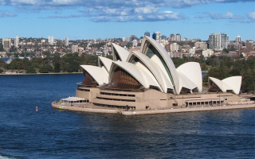
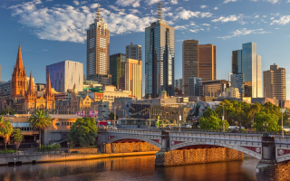
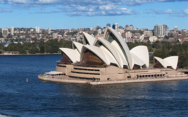
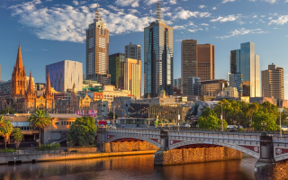

Пляжный отдых. Основное место для любителей этого вида отдыха — Голд Кост (Золотое побережье), район между Сиднеем и Брисбеном. Песчаные пляжи тянутся вдоль побережья на 40 километров. Здесь всё располагает к активному отдыху и развлечениям: поля для гольфа, парки аттракционов, сафари, ночные клубы и дискотеки.
Дайвинг. Большой Барьерный риф — Мекка для любителей подводного плавания. Здесь они могут воочию увидеть 90% кораллов из всех, известных науке, полюбоваться огромным разнообразием рыб, которых обитает около рифа почти 200 видов. Из экстремальных развлечений — спуск в клетке к большим белым акулам. Около рифа насчитывается до 500 островов, на многих из них есть туристическая инфраструктура.
Экскурсии и экотуризм. Уникальная природа Австралии дарит любознательным путешественникам неисчерпаемый источник для впечатлений. Живой интерес у туристов вызывает и знакомство с жизнью аборигенов, сумевших сохранить свою самобытную культуру и обычаи предков. Часто коренные жители отказываются жить в домах, предоставляемых им правительством, поскольку аборигену следует жить под открытым небом.
Сафари. В наши дни это не жестокая охота, а любование природой в комфортных условиях, — передвигаются туристы в кондиционированных джипах, а лагерь для ночлега проводники готовят заранее.
Сёрфинг. Поклонникам этого вида спорта Австралия дарит на выбор два океана и волны любой сложности.
Горнолыжный спорт. Любители спусков со снежных гор найдут отличный горнолыжный комплекс на острове Тасмания, на плато Бен-Ломонд. Кататься можно с июля до сентября. Всё снаряжение выдаётся напрокат, новичкам поможет инструктор. Само плато очень красиво, это национальный парк, где охраняется альпийская фауна и флора.
 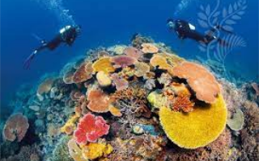
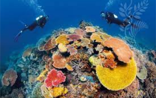

 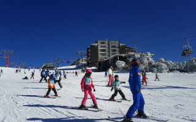
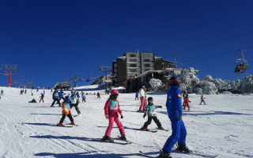
Туристу, собравшемуся в Австралию, легко растеряться, так трудно сориентироваться в неповторимых природных и рукотворных достопримечательностях.
Голубые горы — национальный парк с реликтовыми эвкалиптами, возраст некоторых из них 2000 лет. Над деревьями из-за испарения эвкалиптовых масел висит голубая дымка, придающая горам неповторимый колорит. В парке можно прокатиться на самой крутой в мире железной дороге или полюбоваться окрестностями с высоты канатной дороги.
Парк Какаду — птичий заповедник недалеко от Дарвина, здесь можно наблюдать за жизнью 60 видов млекопитающих, 300 видов птиц и более 100 видов пресмыкающихся.
Национальный парк Намбург поразит «Пустыней кающихся грешников», — полями из песчаных наслоений.
Остров Фрейзер, охраняемый ЮНЕСКО, самый большой песчаный остров в мире, поразит своей природной красотой: дюнами, озёрами, тропическими лесами и белоснежными пляжами.
Остров Тасмания, кроме природной красоты своих парков, порадует гурманов кулинарными и винными фестивалями.
Огненные холмы — место, где до сих пор жив дух золотой лихорадки. Любой может получить здесь участок земли размером 50 на 50 метров и попытаться найти золото.
Скала Улуру недалеко от Алис-Спрингс является сакральным местом для аборигенов, считающих, что отсюда берёт начало весь мир и они сами. Здесь запрещено вмешиваться в традиционный уклад жизни коренных жителей. Экскурсии здесь проводятся на закате или рано утром, когда каменный монолит под лучами солнца магически преображается.
Мост Харбор Бридж в Сиднее, один из самых длинных в мире, его длина 503 метра. Мост — отличное место для красивых фото и видеосъёмок.
Телебашня в Сиднее, самое высокое сооружение в Южном полушарии высотой в 304 метра.
Сиднейский аквариум — морской парк, дающий возможность созерцать необычных рыб и диковинных морских обитателей в их природной среде.
Уникальное розовое озеро Хиллер, единственное в мире с такой окраской. Даже если вы нальёте озёрную воду в отдельную ёмкость, вода будет оставаться розовой. До сих пор тайна розового цвета этого удивительного водоёма не разгадана.
Вулканический остров Лорд-Хау, поражающий свей девственной природой. Здесь отсутствует мобильная связь, а количество туристов, находящихся на острове, не должно превышать 400 человек. Такие правила установлены для сохранения уникальной местной природы.
И это далеко не все удивительные места Австралии, ежегодно притягивающие к себе миллионы туристов из разных стран.
 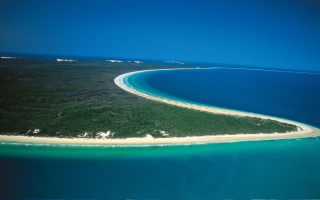
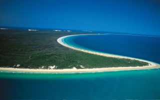
 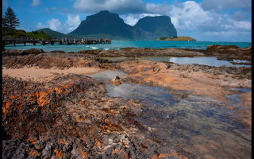
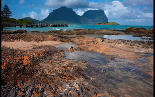
Кухня Австралии ещё очень молода, здесь популярны как блюда Старого Света, так и экзотическая еда аборигенов. В ресторанах вам предложат яичницу из яиц страуса, котлету из крокодила, похлёбку из хвоста кенгуру. Широко распространены блюда их страусятины, кенгурятины и крольчатины. Здесь можно оценить местные изысканные сыры, вина, для желающих организуются гастрономические туры.
Климат Австралии — зеркальная противоположность климата Северного полушария. Самые холодные месяцы, как ни странно это для жителей нашей страны, — июнь, июль и август, а в январе и феврале здесь стоит жара.
Большой размер континента обеспечивает климатическое разнообразие — здесь есть жаркие пустыни и прохладные побережья, снежные горы и тропические леса.
Континент расположен в тропиках и субтропиках, благодаря этому Австралия очень солнечная страна с засушливым климатом. Больше, чем на половине территории страны выпадает меньше 300 мм осадков в год. Часты продолжительные засухи, когда в течение нескольких месяцев не выпадает ни капли дождя.
В пустынных землях центральной части материка температура резко меняется в течение одних суток — днём воздух прогревается до +50, а ночью остывает до -10.
Самый мягкий климат на острове Тасмания, расположенном ближе к умеренному поясу.
Снег в Австралии выпадает в горах Австралийских Альп и Тасмании.
Ровный тёплый климат, разнообразие природных условий в разных частях континента и длительная изолированность материка способствовали тому, что эволюционные процессы Австралии протекали не так бурно, как на других континентах. Благодаря этому до настоящего времени сохранились удивительные растения и животные, давно вымершие на других континентах. Из 12 тысяч видов растительности более 9 тысяч — эндемики, не встречающиеся больше нигде в мире. Из-за того, что климат континента большей частью засушливый, растения здесь сухолюбивые, среди них самые известные — эвкалипт и бутылочное дерево. Тропические леса севера богаты зонтичными акациями, огромными эвкалиптами (до ста метров в высоту!), бамбуком, разными видами фикусов и пальм. Восточные субтропические вечнозелёные леса поражают огромными двадцатиметровыми папоротниками и древовидным хвощом.
 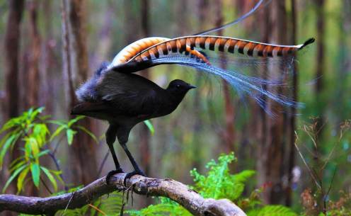
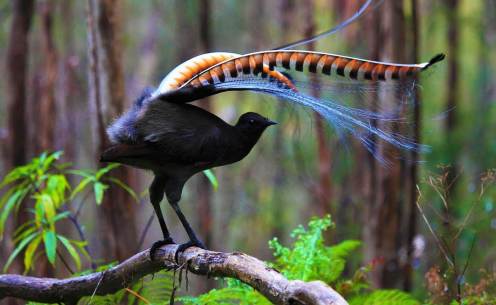
На просторах Австралии живут уникальные животные, они не только не существуют больше нигде на планете, они просто не выживут в другом месте, так как питаются растениями, произрастающими только здесь. Почти 90% представителей животного мира континента эндемичны. Из 235 видов млекопитающих половина — сумчатые. На материке до наших дней сохранились «живые ископаемые» — утконос и ехидна. Австралия – единственный континент, где нет ни копытных, ни обезьян. Здесь есть два выживших представителя хищников — тасманский дьявол, плотоядное сумчатое животное, и собака динго. Один из символов Австралии, тасманский дьявол, раньше жил на всей территории материка, но человек и динго вытеснили его на Тасманию.
Чрезвычайно богат мир пернатых Австралии, насчитывающий 720 видов птиц, из них почти половина — эндемики. Страусы эму, какаду, казуары, чёрные лебеди, птицы-медососы, райские птицы, лирохвосты, — признанные символы континента.


Здесь нет хищников, но есть немало других опасных представителей животного мира — в Австралии 65 видов ядовитых змей. Если вы увидите табличку, запрещающую купание, не пренебрегайте предупреждением — в прибрежных водах встречаются смертельно опасные медузы и акулы. К самым ядовитым животным планеты относятся синекольчатые осьминоги.
Появление человека не лучшим образом повлияло на флору и фауну, многие их уникальные представители были безвозвратно уничтожены. Но сейчас усилиями правительства ситуация кардинально меняется — строго контролируется соблюдение законов о защите окружающей среды. Создано много природоохранных парков и заповедников. Удалось восстановить некоторые виды животных и растений, бывших на грани исчезновения. Национальные парки дали толчок развитию туризма. Во многих природоохранных зонах созданы интереснейшие туристические маршруты, позволяющие прикоснуться к прошлому планеты и воочию наблюдать за жизнью дикой природы Австралии.
Австралия среди материков занимает последнее место по площади, которая составляет 7,7 миллиона квадратных километров. Австралия не имеет границ ни с одним государством. Берега континента омываются морями Индийского и Тихого океанов.
Австралия – единственный континент, где нет ледников и вулканов. Большая часть территории страны занята пустынями и полупустынями, плодородные земли есть на востоке и юго-западе, а на севере расположены редколесья, саванны и джунгли полуострова Арнемленд.
Самые благодатные районы страны — прибрежные. Благодаря влажным морским ветрам, несущим с собой осадки, они получают достаточно воды для растительности, здесь есть и альпийские луга, и тропические джунгли.
Вдоль северо-восточного побережья на 2000 километров тянется Большой Барьерный риф, уникальная достопримечательность Австралии. Многие острова рифа превратились в элитные курорты.
На материке есть горы, но их мало, всего 5% от всей территории, и меньшая их половина выше 1000 метров. В горной цепи Большого Водораздельного хребта, поднимающегося на восточном побережье, находится самая высокая точка континента — мыс Косцюшко высотой 2228 метров.
Основные реки Австралии протекают по юго-востоку страны. Крупных рек всего две — Мюррей длиной в 2,5 тысячи километров, и Дарлинг, чья протяжённость не более 2000 километров. Мюррей более полноводная река, сохраняющая постоянное течение, а Дарлинг в жаркий сезон пересыхает. Обилием полноводных и быстрых рек может похвастаться остров Тасмания.
Юг Австралии изобилует солёными озёрами, не имеющих стока и наполняющихся только в период дождей. Самое крупное озеро — Эйр площадью 9,5 тысяч квадратных километров. Эйр находится ниже уровня моря на 16 метров и является самой низкой точкой материка.
Предки аборигенов, выходцы с острова Новая Гвинея, начали заселять материк много тысячелетий назад. Идиллическое существование коренных жителей впервые было нарушено в XVII веке голландскими исследователями. Европейцы высадились на севере континента и открыли близлежащий большой остров, который они назвали Тасмания по имени голландского путешественника Абела Тасмана.
Почти через сто лет, в 1770 году сюда прибыл Джеймс Кук. Он обследовал восточные земли материка, назвал их Новый Южный Уэльс и провозгласил собственностью Британии. Через десятилетие европейцы начали активно обживать новые земли.
Первыми жителями континента были преступники. В те времена Англия выселяла своих каторжников в Северную Америку, но эту меру наказания пришлось прекратить с началом Войны за Независимость в США.
Английское правительство решило использовать весьма кстати открытые новые земли и разработало план отправки каторжников в Новый Южный Уэльс. В январе 1788 года первая флотилия достигла далёкого материка. На борту 11 кораблей находилось 1373 человека, 700 из них были преступниками. Вскоре вновь прибывшие основали поселение, превратившееся затем в город Сидней. И теперь 26 января жители Зелёного континента отмечают День Австралии.
В течение следующих 80 лет в Австралию было отправлено ещё 160 тысяч преступников. А во второй половине XIX века на континенте нашли золото, началась золотая лихорадка, и больше 40 тысяч китайских эмигрантов приехало сюда в поисках счастья.
После Второй мировой войны страна приняла тысячи мигрантов из 200 государств, что сделало Австралию одной из самых многонациональных стран мира.
Австралия — федеральное парламентское государство. Формально главой государства является английская королева Елизавета II, но исполнительная власть сосредоточена в руках премьер-министра.
Федерация состоит из 6 штатов:
1. Новый Южный Уэльс, средоточие культурных, развлекательных и спортивных мероприятий.
2. Западная Австралия, занимающая почти треть материка и состоящая практически из одних пустынь. Здесь добывается три четверти золота страны и производится одна пятая мирового алюминия. В штате самый высокий средний доход, но и самая большая нехватка населения из-за жаркого климата. По размерам штат сопоставим с Западной Европой.
3. Квинсленд, названный в честь королевы Виктории, знаменит банановыми плантациями и Большим Барьерным Рифом.
4. Виктория, самый маленький штат с развитым горнолыжным спортом. История и развитие штата тесно связаны с золотой лихорадкой.
5. Южная Австралия, известна своим вином и тем, что этот штат никогда не принимал заключённых.
6. Тасмания, почти половину штата занимают объекты Всемирного наследия, находящиеся под защитой.
Кроме штатов, в состав Австралийского союза входят две материковые территории — Северная и Столичная. А также несколько мелких территорий. Половина земли Северной территории принадлежит аборигенам, это самый малонаселённый и наименее урбанизированный район страны. Столичная территория в своё время отделилась от Южного Уэльса, здесь в 1927 году была выстроена Канберра, столица Австралии.
Австралия — страна с высокоразвитой экономикой, крупнейший экспортёр говядины и шерсти, также вывозит большое количество пшеницы, баранины, полезных ископаемых. Соответственно, и уровень жизни населения стабильно высок.
По численности населения страна занимает 50-е место в мире. В Австралии живёт около 24 миллионов человек, из них 230 тысяч — коренное население. Свои законные права аборигены получили только в 60-х годах прошлого века и живут они в основном в заповедниках и национальных парках Западной Австралии и Северной территории.
По конституции Австралии, ни одна из религий не утверждена законом и не пользуется финансовой поддержкой государства. Австралийцы вольны исповедовать любую религию, а также быть свободными от любого вероисповедания.
Плотность населения различна. Если в городах сосредоточено до 80% населения, то в других районах плотность может быть меньше одного человека на квадратный километр. Это объясняется тем, что больше половины территории страны непригодно для обитания человека из-за экстремально жаркого климата.
Австралийцы — дружелюбные и открытые люди, в их темпераменте смешались черты пуританской Великобритании с жизнелюбивым характером выходцев из Америки. Местные жители предпочитают свободный стиль в повседневной одежде, с иностранцами они приветливы и улыбчивы.

1 января — Новый год.
26 января — День Австралии.
Пасхальный понедельник.
25 апреля — Anzac Day (День Австралийского и Новозеландского армейского корпуса).
1 мая — День Труда.
14 июля — День рождения королевы.
25 декабря — Рождество.
27 декабря — День рождественских подарков.
Национальная валюта — австралийский доллар. Наряду с бумажными здесь в ходу первые в мире пластиковые деньги. Обмен валют выгоднее производить в банках, важно помнить, что по выходным они не работают.
С Зелёного континента туристы везут изделия из кожи крокодила, знаменитые австралийские угги, самобытные поделки аборигенов — бумеранги, копья, ритуальные маски. Здесь можно недорого купить опалы. Очень популярны у путешественников разнообразные сувениры из эвкалипта. Многие закупают одежду из уникальной шерсти мериносов. Если вы купите товаров на сумму более, чем 300 долларов, вам вернут 9,1% от потраченной суммы, надо только сохранить чек.
Категорически запрещено вывозить из страны животных, птиц, растения, кораллы, раковины и изделия из бамбука без специального разрешения.
Ввозить нельзя продукты питания, оружие, некоторые лекарства, продукты животного и растительного происхождения, изделия из дерева и даже почву на подошвах. Беспошлинно можно ввезти товары на сумму не больше 900 долларов, 50 сигарет и 1 литр алкоголя. В аэропорту прилёта вас и ваш багаж продезинфицируют специальным средством.
Запомните — в Австралии плевки на улицах, курение в общественных местах и езда в алкогольном опьянении караются большим штрафом
Движение в Австралии левостороннее, так что туристам надо быть предельно внимательными. Из-за больших расстояний самый популярный транспорт в стране — это самолёты.
Также востребовано в стране передвижение на автобусе.
Железнодорожный транспорт почти не развит из-за сложностей прокладки железной дороги.
Автомобиль можно взять в аренду при наличии международных прав, стаже за рулём более 1 года и возрасте больше 21 года и младше 75 лет. Потребуется залог.
Если вы поедете вглубь континента, запаситесь едой, водой, топливом и обязательно возьмите с собой спутниковый телефон, т. к. мобильная связь работает далеко не везде.
Будьте предельно осторожны на природе — вокруг много ядовитых змей и насекомых, освежите в памяти правила оказания первой помощи при укусах ядовитых животных.
В электросети напряжение 240/250 Вольт, для азиатских и европейских приборов понадобятся адаптеры.
В Австралии 3 часовых пояса. Время в Канберре опережает московское на 7 часов.
За пределами Австралии родилась четверть её жителей.
Австралия — самая законопослушная страна в мире, хотя предки многих её граждан — депортированные преступники.
Жители страны составляют 1% населения планеты, а тратят на игру в покер 20% от всемирных трат на эту игру.
25 апреля — Anzac Day (День Австралийского и Новозеландского армейского корпуса).
Неявка на выборы карается штрафом.
Чтобы уберечь овец от собак динго, в Австралии построен самый длинный в мире забор длиной в 5530 километров.